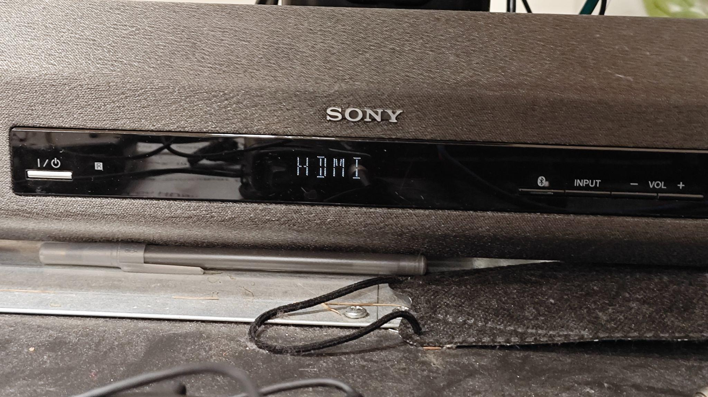

Drama Therapy Lab
Room PC Sound
Power up the system: Ensure the Room PC is powered on (use the PC power button on the rack if needed).

Use the Samsung remote to power on the TV.
Set up audio: Select Samsung TV as the audio device on the Room PC.

Open the audio bar and select HDMI as the input source (do not select HDMI(TV)).
Laptop Sound
Connect your laptop to the TV with HDMI or a USB-C adapter.
In your laptop's audio settings, set the audio output to Samsung TV (similar to the Room PC setup).
Open the audio bar and select HDMI as the input source (do not select HDMI(TV)).
To use the sound bar: Connect to the sound bar via the ¼ inch audio cable. Set the input source of the sound bar to Analog.

External Sound Source
Connect your external audio device to the sound bar using the ¼ inch audio cable.
Set the sound bar input to Analog.
Adjust volume levels on both your external device and the sound bar as needed.